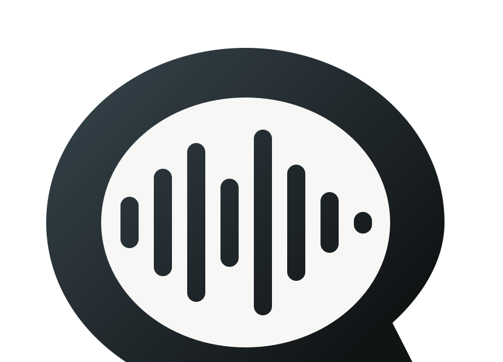

Natural speech in
Speak with pauses, corrections, and rough phrasing. QuietType is designed for real dictation, not studio-clean voice commands.

QuietTypeQuietType turns natural speech into polished writing on your Mac. Local speech recognition, local correction memory, and no cloud processing.
Literal transcription leaves the mess in. QuietType cleans natural speech into usable text while preserving what matters: names, acronyms, technical terms, lists, and corrections.
Speak with pauses, corrections, and rough phrasing. QuietType is designed for real dictation, not studio-clean voice commands.
It removes fillers, handles “actually” corrections, formats lists, normalizes numbers, and adapts tone for messages, notes, email, and code editors.
Voice training and correction memory teach QuietType your vocabulary, preferred spellings, and writing style without sending private text away.
Cloud-first tools can be convenient, but they ask for the most sensitive input you have: your voice, your drafts, and the app context around them. QuietType’s default is local-only.
Speech recognition runs on the Mac using the bundled local engine and Apple Silicon acceleration path.
Cleanup and formatting happen locally. The normal dictation path has no cloud API dependency.
When available, SAGE stores governed local memories for vocabulary and corrections. Dictation memories remain local by default.
QuietType checks macOS permissions and avoids workflows that should not read or write sensitive fields.
Memory exists to improve transcription, not to collect private content. Users can review and teach what QuietType remembers.
The current build is for trusted testers while signing, notarization, onboarding, and model packaging are hardened.